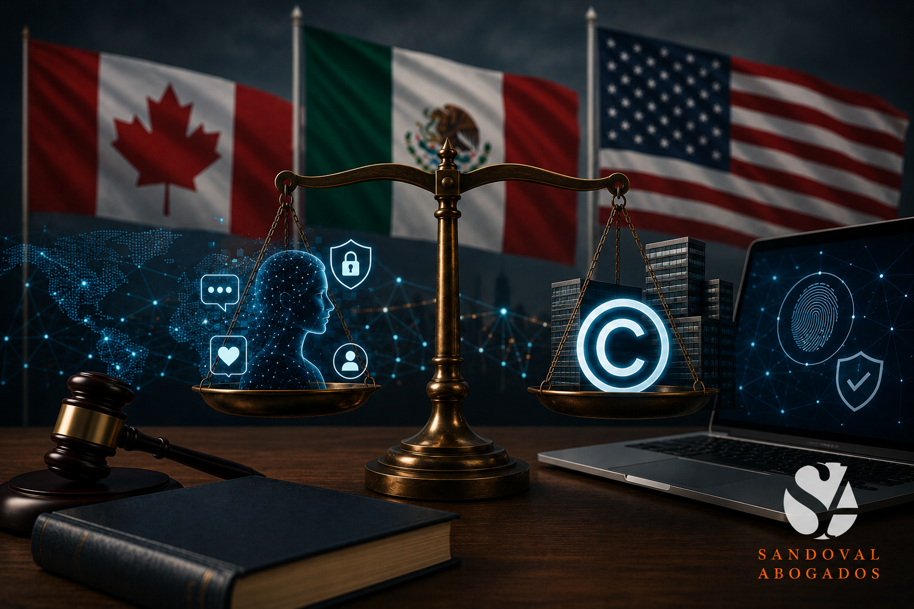

La revisión conjunta del T-MEC está en curso. Los equipos técnicos negocian con la vista puesta en aranceles, reglas de origen y cadenas de suministro. Pero hay una dimensión del tratado que raramente aparece en esa conversación y que un frente creciente de organizaciones —entre ellas el movimiento Ley Olimpia, la Red Latinoamericana de Defensoras Digitales, el laboratorio Tlatelolco Lab de la UNAM y la Barra Mexicana Colegio de Abogados— ha puesto sobre la mesa con urgencia: el T-MEC, en su configuración actual, antepone los intereses de las corporaciones tecnológicas por encima de los derechos fundamentales de las personas que usan esas plataformas.
No es una crítica menor ni marginal. Es una señal de que la revisión de 2026 tiene que ir más allá de los márgenes comerciales.
El problema con el modelo actual.
El Capítulo 20 del T-MEC establece el régimen de propiedad intelectual de América del Norte. Entre sus disposiciones más relevantes para el entorno digital está el mecanismo de notificación y retiro (notice and takedown), incorporado al artículo 114 octies de la Ley Federal del Derecho de Autor: ante una alegación de infracción de derechos de autor, un proveedor de servicios de Internet puede remover contenido sin que quien reclama aporte prueba alguna.
El mecanismo fue diseñado para proteger a titulares de derechos frente a la piratería digital. En la práctica, también se convierte en una herramienta de silenciamiento. Denuncias de violencia, registros de acoso, testimonios de víctimas de violencia de género digital —todo ese contenido queda expuesto a remoción si quien lo publicó no tiene sus derechos documentados con precisión técnica. La asimetría es evidente: las corporaciones tecnológicas y los grandes titulares de derechos tienen estructuras legales para activar y defenderse de estos mecanismos; las usuarias individuales, en su mayoría, no.
El tratado regula con detalle cómo proteger un activo comercial en plataformas digitales. No dice nada sobre cómo proteger a una persona.
A eso se suma una omisión estructural: el T-MEC no contiene disposiciones específicas sobre violencia de género digital, protección de datos personales en contextos de abuso, ni mecanismos de acceso a la justicia para víctimas de violaciones a derechos digitales.
La revisión como oportunidad.
La alianza formada por el movimiento Ley Olimpia, la Red Latinoamericana de Defensoras Digitales, Tlatelolco Lab y la Barra Mexicana hace un llamado concreto: que ningún tratado internacional ponga en peligro los derechos humanos. Que los derechos comerciales no estén por encima de los derechos digitales.
Ese llamado tiene fundamento jurídico sólido. Los tratados internacionales de derechos humanos ratificados por México —entre ellos la Convención sobre la Eliminación de Todas las Formas de Discriminación contra la Mujer (CEDAW) y la Convención de Belém do Pará— establecen obligaciones de protección que el Estado no puede ceder ni relativizar en el contexto de un acuerdo comercial. Si el T-MEC genera condiciones que dificultan el acceso a la justicia de mujeres, infancias y adolescentes víctimas de violencia digital, esa tensión debe resolverse en la revisión, no postergarse.
Las modificaciones que este frente demanda no son incompatibles con un régimen robusto de propiedad intelectual. Son complementarias. Un tratado que protege activos intangibles y también garantiza jurisdicción nacional efectiva frente a violaciones de derechos digitales es un tratado más completo, no más débil.
Qué implica esto para empresas y titulares de derechos.
Operar en el entorno digital bajo el marco del T-MEC requiere entender tanto las protecciones disponibles como sus límites y riesgos. Algunos puntos concretos:
El 114 octies como herramienta y como riesgo
El mecanismo de remoción puede activarse en contra de contenido legítimo. Para creadores, marcas y empresas con presencia en plataformas digitales, tener la titularidad de obras documentada y un protocolo de respuesta ante remociones injustificadas no es opcional: es parte de una estrategia de gestión de riesgos.
Contratos con especificidad en derechos digitales
Los contratos de licenciamiento, cesión de derechos y colaboración creativa deben contemplar explícitamente el entorno digital: qué plataformas, bajo qué condiciones, con qué mecanismos de resolución de conflictos. Un contrato redactado antes de 2020 probablemente no lo hace.
Vigilancia activa del proceso de revisión
Las reformas legislativas que México comprometió ante la USTR —modificaciones a la LFDA y al Código Penal Federal— están pendientes. Si llegan acompañadas de disposiciones que fortalezcan también los derechos de las usuarias, el marco mejora para todos. Si no, la asimetría se profundiza.
Consideración final.
Los tratados comerciales no son neutrales respecto a los derechos. Cada disposición que fortalece la posición de una parte lo hace en relación con otras. La revisión del T-MEC es una oportunidad para que México negocie no solo mejores condiciones comerciales, sino un marco que cumpla con sus obligaciones internacionales de derechos humanos en el entorno digital.
Los derechos comerciales y los derechos digitales no tienen por qué estar en conflicto. Pero cuando lo están, la jerarquía no debería ser una pregunta abierta.
Sandoval Abogados es un despacho jurídico especializado en propiedad intelectual, derecho corporativo y estrategias para empresas innovadoras y del entretenimiento, con sede en la Ciudad de México. contacto@sandovalabogados.mx | sandovalabogados.mx